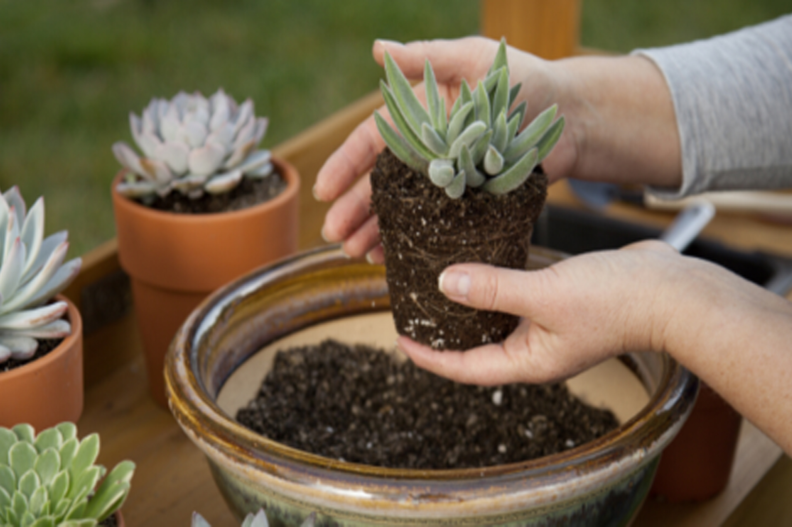

HOW TO GROW SUCCULENTS FROM SEEDS
Growing succulents from seeds is not the easiest and the fastest way to propagate these beauties, but it’s an exciting and rewarding experience. Leaf cuttings are surely the fastest way to propagate succulents, but that means you can propagate only what you already have. And who can resist the tons of gorgeous succulents available on the market? If you’d like to expand your succulent collection and learn how to grow them from seeds, take a look at our guide.
THINGS TO KNOW BEFORE GROWING SUCCULENTS FROM SEEDS
If you’re a patient gardener that shares love for succulents and seed raising, then you will definitely enjoy watching your seeds turn into beautiful tiny rosettes.
As said previously, succulents are slow growers and some seeds need months to germinate. But, it’s the cheapest way to add a lot of beautiful new plants to your collection.
Most succulents are self-sterile, meaning they need pollen from another plant to reproduce. The only certain way to get the exact plant you want is propagating from cuttings or when the female plant is pollinated by the other plant from the same species.
That brings us to the most important thing – buying seeds from a reliable seller. Getting your succulent seeds from a reliable source guarantee that your seeds have a great quality. It also guarantees that you’ll get the exact succulent you’ve asked for. However, some people love that element of surprise when growing succulents from seeds. Growing hybrid seedlings that have different characteristics than their parent plants is surely an interesting aspect of growing succulents. Especially if you’re collecting the seeds from your plants on your own
HOW TO CARE OF SUCCULENT SEEDLINGS
Once you’ve provided your seeds with the optimal conditions, you will need to wait for several days, weeks or sometimes months, for them to germinate, depending on the succulent type. When the first leaves appear, remove the lid. You will need to maintain a regular watering schedule until new plants establish a strong root system. Avoid exposing these baby plants to the direct light, because the hot sun can burn them. As they grow, you can gradually start introducing them to more and more direct light. When the leaves start to look ‘fleshy’, you can start treating your succulent seedlings as mature plants and cut back on watering gradually.
TRANSPLANTING SUCCULENT SEEDLINGS
If the whole process of growing succulents from seeds sounds a bit terrifying to you, there’s a silver lining – succulent seedlings handle transplantation very well.
When your new succulent babies develop a root system and grow big enough to make the tray crowded, it’s time for transplanting them into their new homes.
Repot the new grown succulents in a good organic potting mix and rock/perlite mixture. Organic matter provides plants with required nutrients, while the rock component provides good drainage and stability to the soil mix.
Find a sunny place for your succulents and be sure to water them only when the soil is completely dry. Now that you have a variety of shapes and colors, and the ability to make jaw-dropping succulent arrangements, it seems that the path from a succulent seed to the grown plant is not that hard after all.